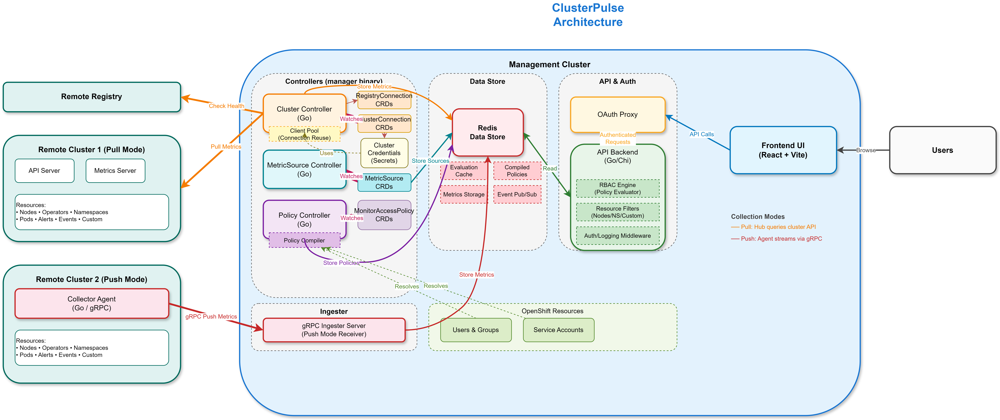

Architecture¶
ClusterPulse consists of several components that work together to provide secure multi-cluster monitoring with both pull and push-based collection modes.
System Overview¶

Components¶
Cluster Controller (Go)¶
The Cluster Controller is a Kubernetes operator that:
- Watches
ClusterConnectionCRDs - Connects to remote clusters using provided credentials
- Collects metrics (nodes, pods, operators, resources) using MetricSource CRDs
- Stores data in Redis for the API to consume
- Hosts the Ingester gRPC server for push-mode collectors
- Deploys collector agents to managed clusters when
collectionMode: push
Collector Agent (Go)¶
The Collector Agent is a single binary deployed on each managed cluster in push mode. It:
- Runs as a single-replica Deployment in
clusterpulse-systemnamespace - Reuses the same collection packages as the hub controller
- Collects metrics locally using in-cluster ServiceAccount (no remote tokens)
- Pushes metrics to the hub Ingester via gRPC bidirectional streaming
- Buffers up to 10 collection cycles locally during network outages
- Receives MetricSource configs from the Ingester (no hub k8s API access needed)
Ingester (embedded in Cluster Controller)¶
The Ingester is a gRPC server embedded in the cluster controller (cmd/manager/). It can be enabled via clusterEngine.ingester.enabled in the ClusterPulse CR, which provisions the Service, Route, and TLS infrastructure automatically (see Configure Ingester TLS).
- Accepts bidirectional streaming connections from collector agents
- Supports optional TLS termination for OpenShift Route passthrough (see Configure Ingester TLS)
- Authenticates collectors via bearer token metadata
- Transforms protobuf messages to internal types
- Dual-writes to Redis (current state) and optionally VictoriaMetrics (time-series)
- Publishes events via existing pub/sub channels
- Pushes MetricSource config updates to connected collectors
Policy Controller (Go)¶
The Policy Controller compiles RBAC policies and runs as part of the unified
cluster-controller binary (cmd/manager/), not as a standalone process.
- Watches
MonitorAccessPolicyCRDs - Compiles policies into efficient evaluation structures
- Indexes policies by user/group for fast lookup
- Validates time-bound policies
API Server (Go/Chi)¶
The API Server handles all user requests:
- Authenticates users via OAuth proxy headers
- Resolves group membership from OpenShift User/Group resources
- Evaluates RBAC policies for every request via the built-in RBAC engine
- Filters resources based on user permissions
- Serves historical metric data from VictoriaMetrics (when enabled)
- Lives in
cmd/api/alongside the controller manager
VictoriaMetrics (optional)¶
When enabled, VictoriaMetrics provides time-series storage for historical metrics:
- Receives data from the Ingester via remote-write (Prometheus text format)
- Stores cluster and node metrics with 30-day retention (configurable)
- Queried by the API server via PromQL HTTP API
- RBAC applied at query time by scoping to accessible clusters
Collection Modes¶
ClusterPulse supports two collection modes, configurable per-cluster via the
collectionMode field on ClusterConnection:
| Mode | Description | When to Use |
|---|---|---|
pull (default) |
Hub controller pulls metrics via remote API calls | Small deployments, simple setup |
push |
Collector agent on managed cluster pushes metrics via gRPC | Large deployments, restricted networks, WAN optimization |
Both modes coexist. The hub controller falls back to pull-based collection when a push-mode collector is not connected.
Data Flow¶
Pull Mode (default)¶
- Cluster Controller collects metrics every 30 seconds via remote k8s API
- Data is stored in Redis with TTL
- Policy Controller indexes policies for fast lookup
- API Server receives user request, applies RBAC, returns filtered data
Push Mode¶
- Collector Agent collects metrics locally on the managed cluster
- Agent pushes metrics to hub Ingester via gRPC stream
- Ingester dual-writes to Redis (current state) and VictoriaMetrics (history)
- API Server serves current data from Redis, historical data from VictoriaMetrics
- RBAC filtering applied identically to both modes
Communication¶
Managed Cluster A Hub Cluster
+---------------------+ +-------------------------------+
| Collector Agent | gRPC/TLS | Manager (existing) |
| (reuses existing | ----------> | + Ingester Server |
| collection pkgs) | | - validates, transforms |
+---------------------+ | - dual-writes: |
| Redis (current state) |
Managed Cluster B | VictoriaMetrics (history)|
+---------------------+ +-------------------------------+
| Collector Agent | gRPC/TLS | |
| | ----------> VictoriaMetrics Redis
+---------------------+ (time-series) (existing)
| |
+------+--------------+------+
| API Server |
| current: Redis |
| history: VictoriaMetrics |
| RBAC: unchanged |
+----------------------------+